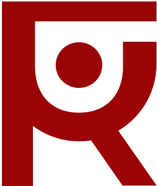

About
My name is Richard PERES, I am an DevOps & Cloud Engineer
specialized in Kubernetes, Public Cloud and DevOps (IaC, CICD,..) topics for
more than 3-4 years.
My areas of interest and skills relate to overall DevOps philosophy such as
Kubernetes (certified) & Docker, Azure / GCP (both certified) and AWS clouds, Terraform Cloud (certified), automation through CICD (GitHub and GitLab) and Linux / Bash scripts
as well as pure development and software architecture in Go, Java and Javascript (Node/NestJS).
More details on the skills below.
To resume my experience, I am:
A passionate Devops & Cloud engineer who loves working with Kubernetes, GCP/Azure and DevOps tooling (CI/CD, Terraform)
Currently working at Alpian private bank, in Geneva/Lausanne, as a DevOps & Cloud Automation Engineer (GCP, Kubernetes, Terraform, GitHub Actions and more)
Certified in both Azure & GCP (Fundamentals), CKA + CKAD, GitLab CI/CD, Terraform and soon (very soon) CKS, AWS Solution Architect & more!
 An (ex) international Cloud
Consultant at
Deloitte
Switzerland, Zurich, CH
An (ex) international Cloud
Consultant at
Deloitte
Switzerland, Zurich, CH An ex independent Web Freelancer (2019-2021)
 Diplomed of both a Computer
Sciences Engineering + Master Degree,
(speciality Software Architecture) and a Business Administration &
Management Master Degree
Diplomed of both a Computer
Sciences Engineering + Master Degree,
(speciality Software Architecture) and a Business Administration &
Management Master Degree
My socials ↓